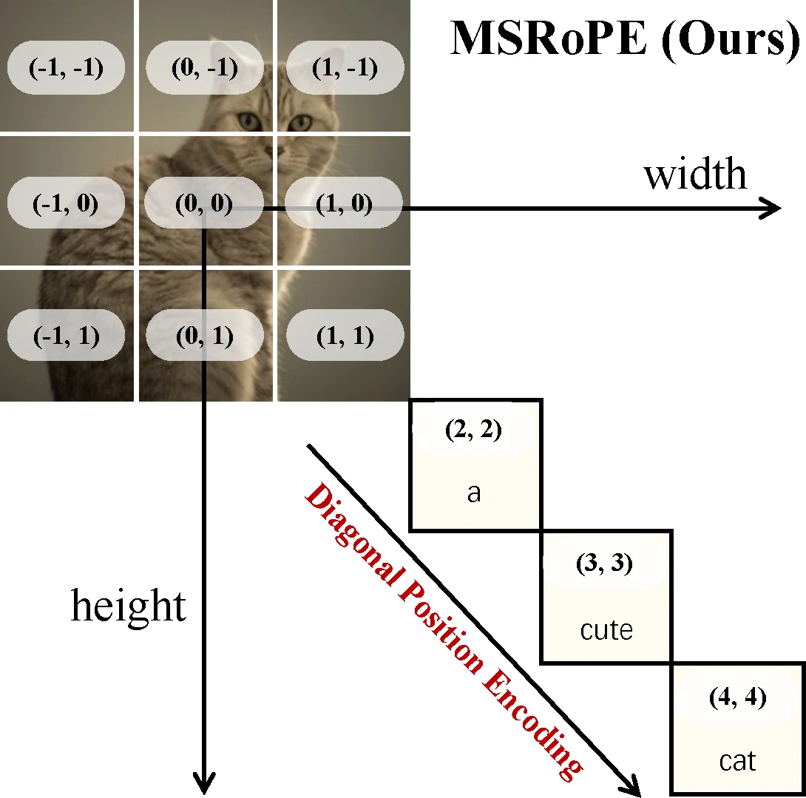
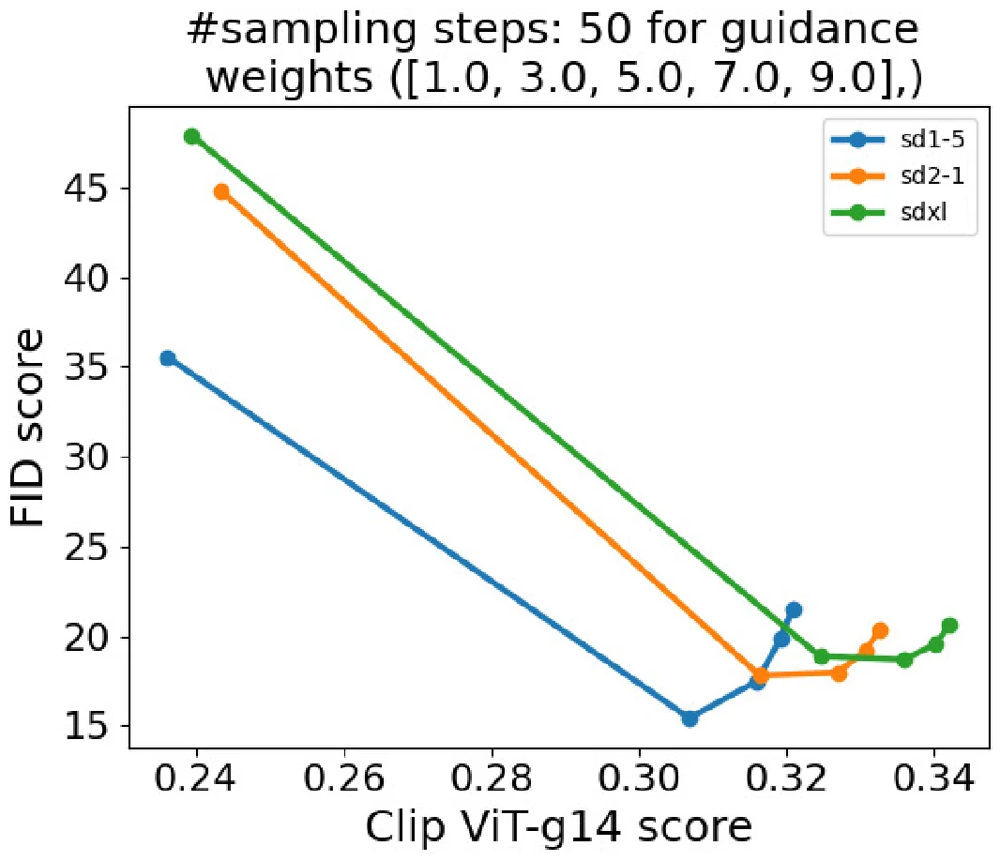
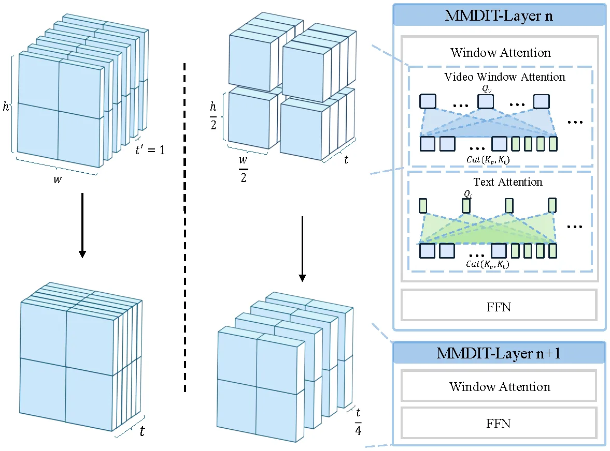
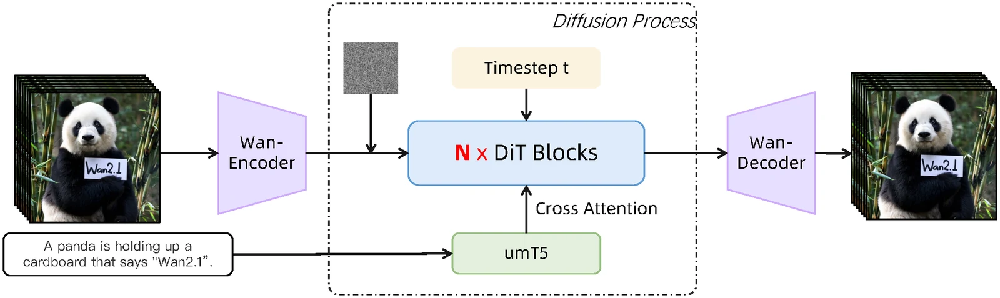
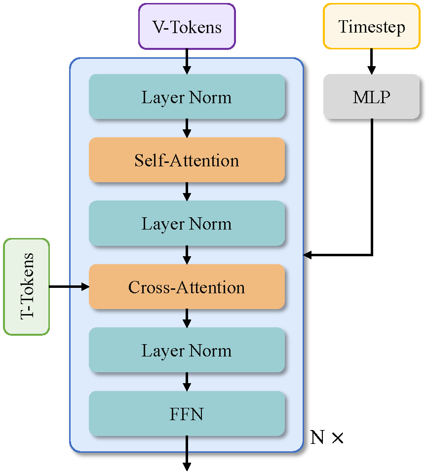
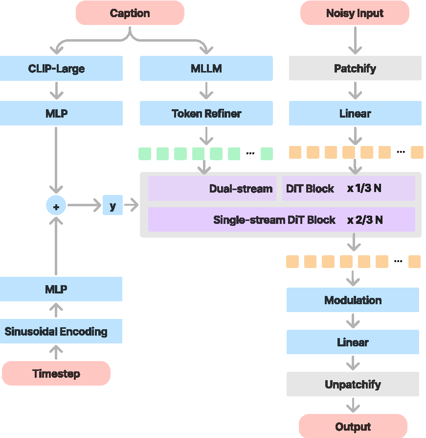

Models & Recipes
Integrated systems at scale, where the whole recipe is the contribution.
9 papers · 1,397 avg citations
Written by Junkun Yuan.
Click here to go back to main contents.
Table of contents ▼
- Image Generation (6)
- Video Generation (3)
Seaweed-7B(arXiv 2025) Wan(arXiv 2025) HunyuanVideo(arXiv 2024)
Image Generation
Seedream 4.0: Toward Next-generation Multimodal Image Generation
ByteDance Seed
arXiv, 2025
Sep 24, 2025 Seedream 4.0 (270)
A large DiT with a high-compression VAE trains text-to-image and editing together, with adversarial distillation for few-step sampling.
Insight. Generation and editing help each other: training them jointly beats a model for each task, so a single model does both tasks.
-
Efficient DiT and VAE (§1, §2.1). A DiT designed for scale and a VAE with a high compression ratio reduce the image tokens. Training and inference FLOPs fall more than 10× against Seedream 3.0, so training runs at native 1K to 4K. The design is hardware-friendly.
-
Knowledge data (§2.1). Figures from in-house textbooks, articles and novels get an easy, medium or hard rating, and the hardest are down-sampled. Synthetic formula images come from OCR output and LaTeX source. This fixes a resampling that favored natural images.
-
Two-stage pre-training (§2.1). Stage one trains at an average with varied aspect ratios, and stage two trains at to .
-
Joint post-training (§2.2). CT, SFT and RLHF train text-to-image, single-image editing and multi-image reference together on one causal-diffusion DiT, as in SeedEdit 3.0. CT mainly helps instruction following for editing, and SFT helps the consistency with the reference.
-
Editing data (§2.2). Each sample has a reference image, a target image and an instruction. Both images get captions at three levels of detail, which act as data augmentation. Consistent terms in both captions describe the content that the reference and the target share.
-
VLM prompt engineering (§2.2). A VLM from Seed1.5-VL reads the prompt and the reference images. It routes the task, rewrites the prompt with an adaptive thinking budget, writes the captions and picks the aspect ratio. It can also plan an image series from one request.
-
Adversarial acceleration (§2.3). Adversarial distillation post-training (ADP) with a hybrid discriminator gives a stable few-step start. ADM then fine-tunes it with a learnable diffusion-based discriminator. Each sample follows its own trajectory, as in Hyper-SD and RayFlow.
-
Quantization and speculative decoding (§2.3). An adaptive 4/8-bit hybrid quantization smooths outliers offline and searches the best granularity for the sensitive layers. The draft model of the PE model predicts features from past features and the tokens one step ahead.
-
Experiments (§3). The model ranks first on the Artificial Analysis text-to-image and editing arenas, and makes a 2K image in 1.4 s.
-
Best of four beats the average (§3.2). On DreamEval, its mean instruction score trails GPT-Image-1's, but its best of four is higher.
The training and sampling code. Follow Sections 2.2–2.3 of the paper.
def caption_levels(captioner, image, levels=3):
return [captioner(image, detail=k) for k in range(levels)] # three levels of detail
def editing_example(reference, target, instruction, captioner):
k = int(torch.randint(0, 3, ())) # one level per example, as data augmentation
ref_caption, target_caption = caption_levels(captioner, reference)[k], caption_levels(captioner, target)[k]
return reference, target, instruction, ref_caption, target_caption
def post_train_batch(t2i_data, edit_data, multi_ref_data, captioner):
# Mix the tasks in one batch, so text-to-image and editing train together.
edits = [editing_example(*next(data), captioner) for data in (edit_data, multi_ref_data)]
return [next(t2i_data)] + edits
def sample(pe_vlm, dit, prompt, references, num_steps):
# 1. Let the VLM route the task, rewrite the prompt, caption the images and pick the size.
plan = pe_vlm(prompt, references) # a longer thinking budget for a harder task
# 2. Generate each requested image with the few-step DiT.
return [
dit.sample(plan.prompt, plan.captions, references, size=plan.size, num_steps=num_steps)
for _ in range(plan.num_outputs)
]Qwen-Image Technical Report
Alibaba Group
arXiv, 2025
Aug 04, 2025 Qwen-Image (1,171) code (8.5K)
A text-rendering curriculum and a dual-encoded input image let a 20B MMDiT render long Chinese text and edit with consistency.
Insight. Legible text came from data and a text-tuned VAE decoder, not from a new denoiser. Rare characters need synthetic rendered text.
-
Three parts (§2, Tab. 1). A frozen Qwen2.5-VL (7B) reads the prompt under a task system prompt, and its last hidden states are the condition . A VAE compresses an image 8×8 into 16 channels, and a 20B double-stream MMDiT of 60 layers denoises its 2×2 latent patches.
-
VAE (§2.3). The Wan-2.1-VAE encoder stays frozen, so one encoder can serve images and videos. Only the image decoder is fine-tuned, on text-rich images, with reconstruction and perceptual losses. It drops the adversarial loss, which gives no useful signal at high quality.

-
MSRoPE (§2.4, Fig. 8). The image positions center on 0, and text token gets the index on every axis, with . So the text lies on the diagonal and acts as a 1-D RoPE. In Seedream 3.0, text on row 0 shares its positions with the middle image row.
-
Flow matching (§4.1, Eq. 1–2). , , where is the image latent, is the Gaussian noise and is logit-normal, with at the data. The loss is with the condition . The paper gives no parameters for the logit-normal.
-
Data (§3.1–3.4). Billions of pairs are 55% Nature, 27% Design, 13% People and 5% Synthetic. The synthetic part is rendered text only, never images from other models. One pass of a captioner such as Qwen2.5-VL writes the caption and the JSON metadata of each image.
-
Curriculum (§3.2, §4.1.3). Seven filter stages follow the resolution, 256 → 640 → 1328. The data moves from non-text to text, from raw to refined and from unbalanced to balanced. Synthetic text enters at stage 4, when the base model is stable, to improve text rendering.
-
SFT and DPO (§4.2, Eq. 3). SFT uses human-picked, high-quality images. DPO uses the human best and worst picks: , where Diff is the flow-matching error of the winner image minus that of the loser image.
-
GRPO (§4.2, Eq. 4–8). A small last stage follows Flow-GRPO, with an SDE sampler Eq. (7) for the exploration, the group-normalized advantage Eq. (4) and a closed-form KL Eq. (8). The paper keeps it small and does the large-scale RL with DPO, which is offline and scales better.
-
Editing (§4.3, Fig. 14). The input image enters both streams. Qwen2.5-VL reads it with the instruction for the semantics, and its VAE latent joins the noisy latent along the sequence for the detail. MSRoPE gains a frame axis to tell the input image and the output image apart.
-
Sampling (release). 50 Euler steps run on a time grid shifted toward noise for larger images, with the guidance , , which keeps the conditional norm. It uses an empty negative prompt and drops the system-prompt tokens from .
-
Experiments (§5). It gets DPG 88.32, GenEval 0.91 after RL and 58.30 on ChineseWord (GPT Image 1: 36.14), and it leads GEdit.
-
The decoder alone fixes small text (Tab. 2). The tuned decoder lifts the PSNR on text images from 26.77 to 36.63 (FLUX-VAE: 32.65).
-
Checkpointing is not worth it (§4.1.2). It saves 11.3% of the memory but makes one step 3.75× slower, so the training keeps it off.
The training and sampling code. Follow Eq. 1–3 of the paper and the released sampler.
def text_condition(vlm, prompt, template, drop_idx=34):
h = vlm(template.format(prompt)).last_hidden_state # the last layer of Qwen2.5-VL
return h[:, drop_idx:] # drop the system-prompt tokens
def msrope_positions(h, w, num_text, frame=0):
rows = torch.arange(h) - (h - h // 2) # centered on 0
cols = torch.arange(w) - (w - w // 2)
f, r, c = torch.meshgrid(torch.tensor([frame]), rows, cols, indexing="ij")
image = torch.stack([f, r, c], dim=-1).view(-1, 3)
m = max(h // 2, w // 2)
text = (m + torch.arange(num_text))[:, None].expand(-1, 3) # the same index on every axis
return image, text # RoPE on (frame, height, width) with (16, 56, 56) dimensions
def sample_t(bs, t_mean=0.0, t_std=1.0):
return torch.sigmoid(torch.randn(bs) * t_std + t_mean).view(-1, 1, 1, 1) # logit-normal
def time_shift(sigmas, seq_len, base_len=256, max_len=8192, base_shift=0.5, max_shift=0.9):
mu = base_shift + (max_shift - base_shift) * (seq_len - base_len) / (max_len - base_len)
return math.exp(mu) / (math.exp(mu) + (1 / sigmas - 1)) # more noise for larger images
def train(model, vae, vlm, images, prompts, template):
# 1. Encode the images and the prompts.
x_0 = vae.encode(images)
h = text_condition(vlm, prompts, template)
# 2. Interpolate between the noise and the latent.
t = sample_t(bs)
x_1 = torch.randn_like(x_0)
x_t = t * x_0 + (1 - t) * x_1 # Eq. 1
v_t = x_0 - x_1 # Eq. 1
# 3. Regress the velocity.
loss = (model(x_t, t, h) - v_t).square().mean() # Eq. 2
def dpo_loss(model, ref_model, x_win, x_lose, h, beta):
t = torch.rand(len(x_win)).view(-1, 1, 1, 1) # t ~ U(0, 1)
noise = torch.randn_like(x_win)
diff = []
for net in (model, ref_model):
err = [(net(t * x + (1 - t) * noise, t, h) - (x - noise)).square().flatten(1).sum(1)
for x in (x_win, x_lose)] # Eq. 1
diff.append(err[0] - err[1])
return -F.logsigmoid(-beta * (diff[0] - diff[1].detach())).mean() # Eq. 3
def sample(model, vae, vlm, prompt, template, latent_shape, num_steps=50, cfg=4.0, shift_terminal=0.02):
h_c, h_u = text_condition(vlm, prompt, template), text_condition(vlm, " ", template)
sigmas = time_shift(torch.linspace(1, 1 / num_steps, num_steps), seq_len=latent_shape[1])
sigmas = 1 - (1 - sigmas) * (1 - shift_terminal) / (1 - sigmas[-1]) # end at shift_terminal
t = 1 - cat([sigmas, zeros(1)]) # t = 1 is the data
x = torch.randn(latent_shape)
for i in range(num_steps):
v_c, v_u = model(x, t[i], h_c), model(x, t[i], h_u)
v = v_u + cfg * (v_c - v_u)
v = v * v_c.norm(dim=-1, keepdim=True) / v.norm(dim=-1, keepdim=True) # keep the conditional norm
x = x + (t[i + 1] - t[i]) * v # Euler
return vae.decode(x)Seedream 3.0 Technical Report
ByteDance Seed
arXiv, 2025
Apr 15, 2025 Seedream 3.0 (158)
Seedream 2.0, upgraded: defect-aware data, mixed-resolution training with REPA, a VLM reward model and native 2K image output.
Insight. Mask a defect out of the loss instead of dropping the image: a watermark then costs a few latents, not the whole training sample.
-
Defect-aware training (§2.1). A detector, trained on 15,000 labeled samples, boxes watermarks, subtitles and mosaics. An image with defects under 20% of its area stays, and a mask removes the defect regions from the loss. This keeps 21.7% more of the training data.
-
Data sampling (§2.1). Hierarchical clustering balances the visual patterns at several levels, and TF-IDF balances the long tail of caption semantics. A cross-modal retrieval engine injects expert concepts, calibrates the distribution by similarity and adds neighbor pairs.
-
Mixed-resolution training (§2.2.1). Batches pack images of different aspect ratios and resolutions, as NaViT does for image recognition models. Pre-training uses an average of , fine-tuning to , and a size embedding gives the model the target resolution.
-
Cross-modality RoPE (§2.2.1). Text tokens are a 2D grid of shape with a 2D RoPE. Their column IDs continue after those of the image tokens, so one RoPE covers both modalities. It extends Seedream 2.0's Scaling RoPE and helps alignment and text rendering.
-
Objective (§2.2.2, Eq. 1). with and the noise , where is the cosine distance from an MMDiT feature to DINOv2-L features, and . REPA speeds up the convergence of the large-scale training.
-
Resolution-aware timesteps (§2.2.2). As in SD3, comes from a logit-normal distribution, shifted toward low SNR for higher resolutions. Training shifts it by the mean resolution of the dataset , and inference by the target resolution and the aspect ratio.
-
Post-training (§2.3). CT, SFT, RLHF and PE follow Seedream 2.0, with resolution balancing. Several caption models write aesthetic, style and layout terms for CT and SFT. The separate refiner is gone, because the model outputs any resolution from to directly.
-
VLM reward model (§2.3.3). As in generative LLM reward models, a VLM gets the instruction as a query, and the reward is the normalized probability of the "Yes" token. It replaces the CLIP reward models of Seedream 2.0, and it scales from 1B to over 20B parameters.
-
Acceleration (§2.4). As in Hyper-SD and RayFlow, each sample has its own target distribution, with a consistent noise expectation from a pretrained model. A network learns which timesteps to train, with Stochastic Stein Discrepancy. Few steps then match 50-step results.
-
Experiments (§3). Seedream 3.0 ranks first on the Artificial Analysis arena (Elo 1158), with 94% Chinese text availability (2.0: 78%).
-
Portraits tie with Midjourney (Fig. 14). Over 50,000 battles, Midjourney v6.1 has Elo 1198±19.7 and Seedream 3.0 has 1193±11.1.
The training and sampling code. Follow Sections 2.1–2.3 of the paper.
def sample_time_steps(bs, num_pixels, base_pixels=256 ** 2, time_mu=0.0, time_sigma=1.0):
t = torch.sigmoid(torch.randn(bs) * time_sigma + time_mu) # logit-normal
shift = (num_pixels / base_pixels) ** 0.5 # higher resolutions move toward noise, as in SD3
return shift * t / (1 + (shift - 1) * t)
def cross_modal_positions(h, w, num_text):
rows, cols = torch.meshgrid(torch.arange(h), torch.arange(w), indexing="ij")
image = torch.stack([rows.flatten(), cols.flatten()], dim=-1)
text = torch.stack([torch.zeros(num_text), w + torch.arange(num_text)], dim=-1) # a [1, L] grid after the image
return cat([image, text.long()]) # 2D RoPE positions of all tokens
def defect_mask(boxes, latent_hw, max_area=0.2):
mask = torch.ones(latent_hw)
for top, left, bottom, right in boxes: # detected defects, in latent coordinates
mask[top:bottom, left:right] = 0
return mask, (1 - mask.mean()) < max_area # keep the image if its defects cover under 20%
def vlm_reward(vlm, image, query, yes_id, no_id):
logits = vlm(image, query)[-1] # the instruction as a question
return torch.softmax(logits[[yes_id, no_id]], dim=-1)[0] # normalized probability of "Yes"
def train(model, dino, proj, image, x_0, c, mask, positions, num_pixels, repa_weight=0.5):
# 1. Sample the timesteps for this resolution.
t = sample_time_steps(bs, num_pixels).view(-1, 1, 1, 1)
# 2. Build the noisy latent on the linear path and its velocity.
noise = torch.randn_like(x_0)
x_t = (1 - t) * x_0 + t * noise
v_t = noise - x_0 # dx_t / dt
# 3. Predict the velocity over the image and text tokens.
v, feature = model(x_t, t, c, positions) # positions from cross_modal_positions
# 4. Calculate the flow-matching loss without the defect regions, and add REPA.
fm = ((v - v_t).square() * mask).sum() / mask.expand_as(v).sum() # no loss in the defect regions
repa = 1 - torch.cosine_similarity(proj(feature), dino(image), dim=-1).mean() # DINOv2-L features
loss = fm + repa_weight * repa # Eq. 1
def sample(model, c, positions, latent_shape, num_pixels, num_steps=50, base_pixels=256 ** 2):
shift = (num_pixels / base_pixels) ** 0.5 # the shift of the target size
t = linspace(1, 0, num_steps + 1)
t = shift * t / (1 + (shift - 1) * t)
x = torch.randn(bs, *latent_shape)
for i in range(num_steps):
v, _ = model(x, full((bs,), t[i]), c, positions)
x = x + (t[i + 1] - t[i]) * v # Euler step
return xSimpleAR: Pushing the Frontier of Autoregressive Visual Generation through Pretraining, SFT, and RL
Fudan University · ByteDance Seed
arXiv, 2025
Apr 15, 2025 SimpleAR (94) code (432)
Keep a vanilla autoregressive transformer, and improve only its training by pretraining, SFT and GRPO and its inference by vLLM.
Insight. The LLM toolchain works for image AR as it is. GRPO with a plain CLIP reward and vLLM serving need no change for images.
-
One token sequence (§3.1). A Cosmos tokenizer turns a 1024 image into 64×64 codes of a 64K codebook, in raster order. The codes extend the vocabulary of a Qwen2.5 decoder, so one transformer reads the prompt and writes the image, with no separate text encoder.
-
Next-token loss (§3.2, Eq. 1). Pretraining and SFT minimize , where is the -th image token, are the earlier ones and is the text prompt. The loss covers only the image tokens, and training drops 10% of the prompts for the guidance.
-
Two supervised stages (§4.1). Pretraining is at 512 on about 43M images from CC3M, CC12M, OpenImages, SAM1B and Megalith, from the LLM weights. SFT is at 1024 on JourneyDB, Synthetic-dataset-1M and 10M internal images. Qwen2-VL recaptions all the images.
-
GRPO (§3.2, Eq. 2). , where is the importance ratio to the old policy and is the reward normalized within its group, with , , . With only one update for each rollout, the clip never acts.
-
CLIP reward (§3.2). The reward is the CLIP-H cosine of a 224-pixel image and its prompt, on unguided rollouts.
-
Sampling (§3.3). The guidance acts on the log-probabilities, with , where is the logit with no prompt. Each code is drawn from the full 64K codebook at temperature 1. The paper writes greedy search with top-K 64000, but the release samples.
-
Inference (§3.3, Tab. 5). A KV cache and vLLM serving with paged attention cut the time for one 1024 image from 227.62 s to 13.55 s.
-
Experiments (§4.2). The 0.5B model gets GenEval 0.59 and DPG 79.66 (LlamaGen at 0.8B: 0.32 and 65.16). At 1.5B: 0.63 and 81.97.
-
CLIP beats a preference reward (Tab. 4). CLIP-H lifts GenEval from 0.53 to 0.59, but the preference-tuned HPSv2 lifts it to 0.56.
-
LLM weights do not matter (Tab. 2). The LLM initialization moves DPG from 69.43 to 70.52, maybe because the prompts are simple.
The training and sampling code. Follow §3 of the paper.
def tokenize(vq_model, text_tokenizer, prompt, image, p_drop_cond=0.1):
codes = vq_model.encode(image).flatten() # 64 x 64 codes of a 1024 image, raster order
text = text_tokenizer("" if rand(1) < p_drop_cond else prompt) # drop the prompt for the guidance
return cat([text, codes + len(text_tokenizer)]), len(text) # the codes follow the text vocabulary
def token_logps(model, prompt_ids, ids):
logits = model(cat([prompt_ids, ids], dim=1)).logits[:, prompt_ids.shape[1] - 1:-1]
return logits.log_softmax(-1).gather(-1, ids[..., None])[..., 0]
def clip_reward(clip, images, prompts):
e_img = F.normalize(clip.encode_image(images), dim=-1)
e_text = F.normalize(clip.encode_text(prompts), dim=-1)
return (e_img * e_text).sum(-1) # cosine similarity
def train(model, vq_model, text_tokenizer, prompt, image):
# 1. Build one sequence of the text and image tokens.
ids, num_text = tokenize(vq_model, text_tokenizer, prompt, image)
# 2. Calculate the next-token loss on the image tokens.
logits = model(ids[None, :-1]).logits[0]
loss = F.cross_entropy(logits[num_text - 1:], ids[num_text:]) # Eq. 1
def grpo_step(model, ref_model, vq_model, clip, text_tokenizer, prompt_ids, prompts,
num_generations=4, epsilon=0.2, beta=0.04, temperature=1.0, num_codes=4096):
# 1. Roll out a group of images for each prompt.
prompt_ids = prompt_ids.repeat_interleave(num_generations, dim=0)
prompts = [p for p in prompts for _ in range(num_generations)]
with no_grad():
ids = model.generate(prompt_ids, max_new_tokens=num_codes, temperature=temperature) # vLLM
images = vq_model.decode(ids - len(text_tokenizer))
rewards = clip_reward(clip, images, prompts)
# 2. Normalize the rewards in each group.
r = rewards.view(-1, num_generations)
adv = ((r - r.mean(1, keepdim=True)) / (r.std(1, keepdim=True) + 1e-4)).flatten()[:, None]
# 3. Calculate the clipped objective and the KL to the reference model.
logp = token_logps(model, prompt_ids, ids)
with no_grad():
ref_logp = token_logps(ref_model, prompt_ids, ids)
ratio = torch.exp(logp - logp.detach()) # one update per rollout
objective = torch.min(ratio * adv, ratio.clamp(1 - epsilon, 1 + epsilon) * adv)
kl = torch.exp(ref_logp - logp) - (ref_logp - logp) - 1
loss = (beta * kl - objective).mean() # Eq. 2
def sample(model, vq_model, text_tokenizer, text_ids, null_ids, cfg_scale=6.0, temperature=1.0,
num_codes=4096):
cond, uncond, offset = text_ids, null_ids, len(text_tokenizer)
for _ in range(num_codes):
l_c = model(cond[None]).logits[0, -1, offset:].log_softmax(-1) # the 64K visual codes
l_u = model(uncond[None]).logits[0, -1, offset:].log_softmax(-1)
logits = cfg_scale * (l_c - l_u) + l_u # the guidance on the log-probabilities
code = torch.multinomial((logits / temperature).softmax(-1), 1) + offset
cond, uncond = cat([cond, code]), cat([uncond, code])
return vq_model.decode(cond[len(text_ids):] - offset)Seedream 2.0: A Native Chinese-English Bilingual Image Generation Foundation Model
ByteDance Seed
arXiv, 2025
Mar 10, 2025 Seedream 2.0 (68)
A bilingual text-to-image model with an LLM text encoder, a glyph-aligned ByT5 for text rendering, and RLHF with several reward models.
Insight. Language and culture enter mainly through the text encoder: a bilingual LLM lets native Chinese data teach both of them directly.

-
MMDiT (§3.1). As in SD3, each block has one self-attention over the image and text tokens, a separate MLP for each modality, adaLN modulation, and QK-Norm for stable training. A self-developed VAE gives the latent, and patches give image tokens.
-
Scaling RoPE (§3.1). Text tokens get a learned position embedding, and image tokens a 2D RoPE with a scale factor that depends on the resolution. Thus the center patches have similar position IDs at all resolutions, and untrained aspect ratios work to some extent.
-
LLM text encoder (§3.2). A self-developed bilingual decoder-only LLM replaces CLIP and T5. Its features differ in distribution from theirs and make training unstable, so a fine-tuning on text-image pairs aligns it first. Extra data adds Chinese style and professional terms.
-
Glyph-aligned ByT5 (§3.3). The text to render goes through the LLM and through ByT5, and an MLP projects the ByT5 features into the LLM space. ByT5 alone repeats characters in long text. The recaption gives font, color, size and position, with no explicit layout boxes.
-
Aesthetic fine-tuning (§4.1–4.2). Continued training on filtered data and millions of hand-picked images adds VMix tags for color, lighting, texture and composition as conditions. SFT adds generated images as negative samples, and a data resampling keeps the alignment.
-
Reward models (§4.3.2). Three bilingual CLIP models, trained with a ranking loss, score image-text alignment, aesthetics and text rendering. The reward is CLIP's own output, with no extra head as in ImageReward. The text-rendering reward applies only to prompts with text.
-
Feedback learning (§4.3.3). As in ReFL, the model maximizes the reward scores directly, and the DiT and the LLM text encoder train together. A weight EMA and a chosen timestep keep it stable. Each round retrains the reward models on the bad cases of the new model.
-
Prompt engineering (§4.4). An LLM rewrites a user prompt into a caption-like prompt . Fine-tuning on pairs comes first, then SimPO on rewrite pairs whose images differ in quality. The pairs come from hand rewrites and from training captions without aesthetic terms.
-
Refiner (§4.5). The base model makes images. A refiner from the base model trains at , and then RLHF uses a texture reward from high-texture images and their degradations. It scales the images up to , enriches the texture and fixes small structure errors.
-
Acceleration (§6.1). A guidance-scale embedding replaces the two CFG calls with one. Step distillation follows Hyper-SD's TSCD with trajectory segments, then 8, 4, 2 and 1, from local to global consistency. An adversarial loss joins the MSE loss for the far targets.
-
Experiments (§7). Seedream 2.0 has the top Elo, 1117 (Ideogram 2.0: 1104), and 78% Chinese text accuracy (MiracleVision: 65%).
-
First only in structure (Fig. 17). It is second in alignment, 3.90 to Ideogram's 3.99, and in aesthetics, 3.27 to Midjourney's 3.44.
The training and sampling code. Follow Sections 3–4 and Figure 9 of the paper.
def encode_text(llm, byt5, glyph_mlp, prompt, glyph_text):
tokens = llm(prompt) # the prompt also gives the font, color, size and position of the text
glyphs = glyph_mlp(byt5(glyph_text)) # character-level features, projected into the LLM space
return cat([tokens, glyphs], dim=1) # §3.3
def reward(images, prompts, has_text, align_rm, aesthetic_rm, text_rm):
r = align_rm(images, prompts) + aesthetic_rm(images)
return r + has_text * text_rm(images, prompts) # the text-rendering reward only for text prompts
def distill_segments(stages=(16, 8, 4, 2, 1), num_timesteps=1000):
return [torch.linspace(num_timesteps, 0, k + 1).long() for k in stages] # TSCD segment edges per stage
def feedback_learning(dit, llm, byt5, glyph_mlp, vae, prompts, glyph_texts, has_text, rms, t_stop):
# 1. Denoise without gradients down to a late timestep.
with no_grad():
x = dit.sample(encode_text(llm, byt5, glyph_mlp, prompts, glyph_texts), stop_at=t_stop)
# 2. Predict the clean latent in one step, with gradients through the DiT and the LLM encoder.
x_0 = dit.predict_clean(x, t_stop, encode_text(llm, byt5, glyph_mlp, prompts, glyph_texts))
# 3. Maximize the sum of the rewards.
loss = -reward(vae.decode(x_0), prompts, has_text, *rms).mean()
def sample(pe_llm, dit, refiner, llm, byt5, glyph_mlp, prompt, glyph_text, base_size=512, size=1024):
prompt = pe_llm(prompt) # rewrite the user prompt, §4.4
c = encode_text(llm, byt5, glyph_mlp, prompt, glyph_text)
x = dit.sample(c, size=base_size)
return refiner.sample(c, init=x, size=size) # §4.5SDXL: Improving Latent Diffusion Models for High-Resolution Image Synthesis
Stability AI
International Conference on Learning Representations (ICLR), 2024
Jul 04, 2023 SDXL (5,733) code (27.3K)
It became the open base model of 2023–2024. Most community fine-tunes, LoRA and control adapters, and distilled few-step generators of those years build on it.
An open latent diffusion model with a 3× larger UNet, two text encoders, micro-conditioning on size and crop, and a refiner model.
Insight. Condition on the metadata that preprocessing destroys: small images stay in the data, and the crop becomes a control at inference.
-
Architecture (§2.1, Tab. 1). The 2.6B UNet has transformer blocks [0, 2, 10] at its three levels and no 8× level. Cross-attention reads the penultimate outputs of CLIP ViT-L and OpenCLIP ViT-bigG, concatenated to 2048 channels. The encoders have 817M parameters.
-
Size conditioning (§2.2). is the image size before any resize. Each value gets its own Fourier embedding, and these join the pooled OpenCLIP embedding in the timestep embedding. Without it, training would drop the 39% of the data below 256 pixels.
-
Crop conditioning (Alg. 1). Random crops made SD 1.5 and 2.1 cut off heads in samples. The loader resizes the short side to the target and draws a uniform random crop offset on the long side, . Inference sets and gets object-centered images.
-
Multi-aspect training (§2.3, App. I). Buckets keep about pixels, with sides in multiples of 64 and aspect ratios from 0.25 to 4. A batch comes from one bucket, the bucket size changes at every step, and the target size is a third Fourier-embedded condition.
-
Autoencoder (§2.4). The SD autoencoder retrains with batch size 256, not 9, and a weight EMA. Its latent is scaled by 0.13025.
-
Objective (App. C, Eq. 3). with , where is the denoiser of the noisy latent, and is one of 1000 DDPM levels with from 0.00085 to 0.012. Thus the UNet predicts the noise from the scaled input , and .
-
Training stages (§2.5). The base model trains on an internal dataset for 600,000 steps at with batch size 2048, then another 200,000 steps at . Multi-aspect fine-tuning near then adds an offset noise of 0.05, which the paper calls necessary for good-looking images.
-
Refiner (§2.5). A second LDM in the same latent space trains on high-quality data and the first 200 of 1000 noise levels. It noises the base latent and denoises it with the same prompt (SDEdit), at strength 0.15. The step is optional and improves faces and background detail.
-
Sampling (App. C, Eq. 4). , where is the guidance strength and the conditional text is dropped in 10% of training steps. The demo code takes Euler steps on 50 levels at , and the paper's figures use 50 DDIM steps at scale 8.
-
Experiments (§2.5, App. E). SDXL with the refiner wins 48.44% of four-way votes (SD 1.5: 7.91%) and 54.9% over Midjourney v5.1.

-
FID ranks SDXL last (App. F). On 10k COCO prompts, SDXL has the worst FID of the three models, though human raters prefer it.
-
DiT gave no gain (§3). Early tests of the transformer backbones UViT and DiT gave no immediate benefit, so SDXL kept the UNet.
The training and sampling code. Follow Algorithm 1 and Appendix C of the paper.
def micro_conditions(image, target_size=(1024, 1024)):
c_size = image.shape[-2:] # original (h, w), before any resize
image = resize(image, min(target_size)) # the short side to the target size
h, w = image.shape[-2:]
if c_size[0] <= c_size[1]:
c_crop = (0, int(torch.randint(0, w - target_size[1] + 1, ()))) # Alg. 1
else:
c_crop = (int(torch.randint(0, h - target_size[0] + 1, ())), 0) # Alg. 1
top, left = c_crop
return image[..., top:top + target_size[0], left:left + target_size[1]], c_size, c_crop
def fourier_embedding(values, dim=256, max_period=10000):
freqs = torch.exp(-math.log(max_period) * torch.arange(dim // 2) / (dim // 2))
args = torch.as_tensor(values).float()[..., None] * freqs
return cat([torch.cos(args), torch.sin(args)], dim=-1).flatten(-2) # one embedding per value
def condition(text_encoders, text, c_size, c_crop, target_size):
clip_l, clip_g, pooled_g = text_encoders(text)
ctx = cat([clip_l, clip_g], dim=-1) # 768 + 1280 = 2048 channels
embs = [fourier_embedding(c) for c in (c_size, c_crop, target_size)]
return ctx, cat([pooled_g] + embs, dim=1) # 1280 + 3 * 512 = 2816, added to the timestep embedding
def ddpm_sigmas(num_timesteps=1000, linear_start=0.00085, linear_end=0.012):
betas = torch.linspace(linear_start ** 0.5, linear_end ** 0.5, num_timesteps) ** 2
alphas_cumprod = torch.cumprod(1 - betas, dim=0)
return ((1 - alphas_cumprod) / alphas_cumprod).sqrt() # x = x_0 + sigma * n at each level
def denoise(unet, x, sigma, level, ctx, vec):
eps = unet(x / (sigma ** 2 + 1).sqrt(), level, ctx, vec) # the UNet predicts the noise
return x - sigma * eps # D(x; sigma, c)
def train(unet, vae, text_encoders, image, text, target_size, offset_noise=0.05, scale_factor=0.13025):
# 1. Crop the image and keep the size, crop and target-size conditions.
image, c_size, c_crop = micro_conditions(image, target_size)
z_0 = scale_factor * vae.encode(image)
# 2. Encode the text with both encoders.
text = where(rand(bs) < 0.1, "", text) # 10% text dropout
ctx, vec = condition(text_encoders, text, c_size, c_crop, target_size)
# 3. Noise the latent at one of the 1000 levels, with offset noise.
level = torch.randint(0, 1000, (bs,))
sigma = ddpm_sigmas()[level].view(-1, 1, 1, 1)
noise = torch.randn_like(z_0) + offset_noise * torch.randn(bs, z_0.shape[1], 1, 1)
x = z_0 + sigma * noise
# 4. Regress the clean latent with the weight 1 / sigma^2.
loss = (sigma ** -2 * (denoise(unet, x, sigma, level, ctx, vec) - z_0).square()).mean() # Eq. 3
def sample(base, refiner, text_encoders, text, size=(1024, 1024), num_steps=50, scale=5.0, strength=0.15):
sigmas = ddpm_sigmas()
levels = torch.linspace(999, 0, num_steps + 1)[:-1].long() # 50 of the 1000 levels, high to low
cond = condition(text_encoders, text, size, (0, 0), size) # full size, object-centered
uncond = condition(text_encoders, [""] * bs, size, (0, 0), size)
z = torch.randn(bs, 4, size[0] // 8, size[1] // 8) * (1 + sigmas[levels[0]] ** 2).sqrt()
for model, idx in [(base, levels), (refiner, levels[-int(strength * num_steps):])]:
if model is refiner:
z = z + sigmas[idx[0]] * torch.randn_like(z) # SDEdit: noise the base latent again
for i, level in enumerate(idx):
sigma = sigmas[level]
sigma_next = sigmas[idx[i + 1]] if i + 1 < len(idx) else 0.0
d_c, d_u = denoise(model, z, sigma, level, *cond), denoise(model, z, sigma, level, *uncond)
d = d_u + scale * (d_c - d_u) # Eq. 4 with scale = 1 + w
z = z + (sigma_next - sigma) * (z - d) / sigma # Euler step
return zVideo Generation
Seaweed-7B: Cost-Effective Training of Video Generation Foundation Model
ByteDance Seed
arXiv, 2025
Apr 11, 2025 Seaweed-7B (93)
The report trains a mid-sized video model from scratch on a moderate budget, and shares the data, VAE and attention choices behind it.
Insight. Scale is not the only route: a 7B model on 665K H100 hours rivals 14B models, and it serves at a fraction of their inference cost.
-
Data (§2.1). The pipeline handles 500,000 hours of video a day. Shot splitting, cropping and six filters cut the invalid-clip rate from 42% to 2.9%, and 10,000 feature clusters remove duplicates. A 7B captioner, distilled from a 72B LLM, writes a detailed caption and then a short one.
-
VAE compression (§3.1, Eq. 1). A causal 3D convolutional VAE maps to at the ratio , where are the downsample ratios of time, height and width. The 64× VAE that the paper uses is .
-
Compress in the VAE (§3.1). At equal length, a DiT on the 64× VAE converges faster than one with a patch on the 48× VAE.
-
VAE training (§3.1, Tab. 1). Images come first, then videos, both at mixed resolutions and durations. The losses are L1, LPIPS and an adversarial loss from an image and a video PatchGAN discriminator, with SpectralNorm in place of BatchNorm in the discriminators.
-
Hybrid-stream DiT (§3.2). A dual-stream MMDiT, with separate weights for video and text tokens, uses SwiGLU and AdaSingle timestep modulation and shares two thirds of the FFN parameters in deeper layers. The model has 32 layers with a hidden size of 3584.

-
Attention (§3.2). Full attention scales best with compute, as the loss power laws of Fig. 10 show. Sparse 3D attention windows, in even layers and in odd layers, win at low compute, so a model can pre-train with full attention and fine-tune to the windows later.
-
Pre-training stages (§3.3.1, Tab. 2). 37.5% of the steps train on 256p and 512p images only, then 25% at 256p with video, 25% at 480p and 12.5% at 720p. Video tasks concatenate the condition latent and a binary frame mask on the channels, with 20% image-to-video.
-
Post-training (§3.3.2). SFT on 700k curated videos comes first. DPO then adds an SFT loss on the positives, with and a learning rate of , on the best and the worst of 4 videos for each prompt. In image-to-video, the first-frame latent takes only the diffusion loss.
-
Distillation (§3.5). Trajectory-segmented consistency distillation (TSCD) reaches about 24 network evaluations (NFE). CFG distillation with a CFG-scale embedding removes the second call per step, and adversarial training at 8 NFE removes the blur of the few-step samples.
-
Infrastructure (§3.4). FSDP with Ulysses, a runtime load balance, multi-level activation checkpointing and fused kernels reach 38% MFU.
-
Experiments (§4.1). In image-to-video Elo, Seaweed-7B (1,047) ranks second after Kling 1.6 HD (1,065), above Wan 2.1 14B (1,015).
-
Lower loss, same picture (§3.2). Full attention's lower loss gives raters little in text-to-video. Only image-to-video motion improves.
-
One reference model is enough (§3.3.2). A DPO round with a new reference model gains little and hurts prompt following and color.
The training code. Follow §3.1–3.3 of the paper.
def compression_ratio(d_t=4, d_h=16, d_w=16, channels=48):
return channels / (3 * d_t * d_h * d_w) # Eq. 1
def window_grid(layer):
return (1, 2, 2) if layer % 2 == 0 else (4, 1, 1) # windows along time, height and width
def train(model, vae, diffusion_loss, video, c, i2v_ratio=0.2):
# 1. Encode the video with the 64x VAE.
with no_grad():
z_0 = vae.encode(video) # (B, 48, 1 + T/4, H/16, W/16)
# 2. Build the condition latent and the mask of the conditioned frames.
i2v = rand(len(z_0)) < i2v_ratio
cond = torch.zeros_like(z_0)
mask = torch.zeros_like(z_0[:, :1])
cond[i2v, :, 0] = z_0[i2v, :, 0] # first-frame latent
mask[i2v, :, 0] = 1
# 3. Calculate the diffusion loss with the condition on the channels.
loss = diffusion_loss(model, z_0, c, condition=cat([cond, mask], dim=1))
def dpo_loss(model, ref_model, diffusion_error, z_w, z_l, c, beta=100.0, i2v=False):
# 1. Use one noise and one timestep for the pair.
t = torch.rand(len(z_w))
noise = torch.randn_like(z_w)
# 2. Calculate the per-frame errors of the policy and the reference.
err = lambda m, z: diffusion_error(m, z, noise, t, c) # (B, frames)
with no_grad():
ref_w, ref_l = err(ref_model, z_w), err(ref_model, z_l)
err_w, err_l = err(model, z_w), err(model, z_l)
# 3. Keep the first-frame latent out of the preference in image-to-video.
k = 1 if i2v else 0
inside = (err_w[:, k:] - ref_w[:, k:]).sum(1) - (err_l[:, k:] - ref_l[:, k:]).sum(1)
loss = -F.logsigmoid(-beta * inside).mean() # Diffusion-DPO Eq. 14
# 4. Add the SFT loss on the positive video.
loss = loss + err_w.sum(1).mean()Wan: Open and Advanced Large-Scale Video Generative Models
Alibaba Group
arXiv, 2025
Mar 26, 2025 Wan (3,113) code (17.4K)
An open 14B video model: a causal video VAE, a DiT with shared time modulation and umT5 text, and billions of curated images and clips.
Insight. A strong open base model is a shared starting point: later video distillation and RL work can start from its weights, not from scratch.

-
Data filtering (§3.1). The pool holds billions of images and videos. A basic pass on text, aesthetics, watermarks, blur and duration removes about 50% of the data. An expert model scores visual quality in each of 100 clusters, and six motion tiers set the sampling ratio.
-
Captions and visual text (§3.1, §3.3). A LLaVA-style captioner on a Qwen LLM writes dense captions for every image and video. For visual text, hundreds of millions of images render Chinese characters on white, and Qwen2-VL describes real images from their OCR text.
-
Wan-VAE (§4.1.1). A causal 3D VAE maps to with channels, and the first frame is only spatially compressed. RMSNorm replaces GroupNorm, so a chunk-wise feature cache encodes and decodes videos of any length.
-
VAE training (§4.1.2). The recipe inflates a trained 2D image VAE to 3D, which is much faster than a start from scratch, and trains it on 128×128 five-frame clips with . Fine-tuning on varied sizes and lengths then adds a 3D-discriminator GAN loss.
-
Patches and blocks (§4.2.1). A 3D convolution with kernel and stride gives the video tokens. Each block has full spatio-temporal self-attention over all tokens, cross-attention to the umT5 text of 512 tokens, and a feed-forward network.

-
Shared time modulation (§4.2.1). One MLP maps the time embedding to the shift , scale and gate of self-attention and of the FFN: , with a learned bias per block. It saves about 25% of the parameters against one MLP per block.
-
Flow matching (§4.2.2, Eq. 1–3). For a video latent , Gaussian noise and a logit-normal , and . The loss is , where is the velocity that the DiT predicts and is the umT5 embedding of the 512 text tokens.
-
Progressive training (§4.2.2–4.2.3). Text-to-image pre-training at 256px comes first. Joint image-video stages then follow at 256px with five-second 192px clips at 16 fps, then at 480px and 720px. Post-training fine-tunes on curated high-quality videos at 480px and 720px.
-
Sampling (§4.5, release). The release takes 50 steps of the UniPC solver on the shifted noise level , (3 for image-to-video at 480p) and a CFG scale of 5.0. Qwen2.5-Plus rewrites short user prompts into the dense style of the training captions.
-
Experiments (§4.7). On VBench, Wan 14B scores 86.22% (Sora: 84.28%). The 1.3B model scores 83.96% and needs 8.19 GB of VRAM.
-
A T5 encoder beats LLM encoders (§4.7.2). umT5 has a lower loss than Qwen2.5-7B and GLM-4-9B, even with a bidirectional refiner.
-
Thirty minutes per video (§6). Without optimization, the 14B model needs about 30 minutes on one GPU to generate one video.
The training and sampling code. Follow §4.1–4.2 of the paper for training and the official release for sampling.
def sample_time_steps(bs):
return torch.sigmoid(torch.randn(bs)) # logit-normal
def shift_noise_levels(num_steps, shift=5.0):
sigma = torch.linspace(1, 0, num_steps + 1)
return shift * sigma / (1 + (shift - 1) * sigma)
def dit(model, x_t, t, context, patch_size=(1, 2, 2)):
x = F.conv3d(x_t, model.patch_weight, model.patch_bias, stride=patch_size) # kernel = stride
x = x.flatten(2).transpose(1, 2) # (B, L, D) with L = (1 + T/4) * H/16 * W/16
e = model.time_embedding(sinusoidal_embedding(t))
e0 = model.time_projection(e).unflatten(1, (6, model.dim)) # one MLP for all blocks
for block in model.blocks:
shift1, scale1, gate1, shift2, scale2, gate2 = (block.modulation + e0).chunk(6, dim=1) # bias per block
x = x + gate1 * block.self_attn(block.norm1(x) * (1 + scale1) + shift1) # full spatio-temporal
x = x + block.cross_attn(block.norm3(x), context)
x = x + gate2 * block.ffn(block.norm2(x) * (1 + scale2) + shift2)
return model.head(x, e) # unpatchify to the velocity
def train_vae(vae, lpips, video, l1_weight=3.0, kl_weight=3e-6, lpips_weight=3.0):
# 1. Encode the clip and decode it again.
mu, logvar = vae.encode(video)
z = mu + torch.randn_like(mu) * (0.5 * logvar).exp()
video_rec = vae.decode(z)
# 2. Calculate the weighted L1, KL and LPIPS losses.
kl = -0.5 * (1 + logvar - mu.square() - logvar.exp()).mean()
loss = (l1_weight * (video - video_rec).abs().mean() + kl_weight * kl
+ lpips_weight * lpips(video, video_rec).mean())
def train(model, text_encoder, vae, video, prompt, text_len=512):
# 1. Encode the video and the prompt.
with no_grad():
x_1 = vae.encode(video) # (B, 16, 1 + T/4, H/8, W/8)
context = text_encoder(prompt, max_length=text_len)
# 2. Build the noisy latent x_t and its velocity v_t.
t = sample_time_steps(len(x_1))
x_0 = torch.randn_like(x_1)
t_ = t.view(-1, 1, 1, 1, 1)
x_t = t_ * x_1 + (1 - t_) * x_0 # Eq. 1
v_t = x_1 - x_0 # Eq. 2
# 3. Predict the velocity and calculate the error.
u = dit(model, x_t, t, context)
loss = (u - v_t).square().mean() # Eq. 3
def sample(
model, text_encoder, vae, prompt, negative_prompt,
frame_num=81, size=(1280, 720), num_steps=50, shift=5.0, guide_scale=5.0, text_len=512, vae_stride=(4, 8, 8)
):
context = text_encoder(prompt, max_length=text_len)
context_null = text_encoder(negative_prompt, max_length=text_len)
latent_shape = (1, 16, (frame_num - 1) // vae_stride[0] + 1, size[1] // vae_stride[1], size[0] // vae_stride[2])
x = torch.randn(latent_shape)
t_steps = 1 - shift_noise_levels(num_steps, shift) # t = 1 - sigma, from noise to data
for i in range(num_steps):
u_c = dit(model, x, t_steps[i], context)
u_u = dit(model, x, t_steps[i], context_null)
u = u_u + guide_scale * (u_c - u_u) # CFG
x = x + (t_steps[i + 1] - t_steps[i]) * u # Euler step, the release uses UniPC
return vae.decode(x)HunyuanVideo: A Systematic Framework For Large Video Generative Models
Tencent
arXiv, 2024
Dec 03, 2024 HunyuanVideo (1,874) code (12.7K)
An open 13B text-to-video model: a 3D VAE from scratch, a dual- to single-stream DiT with an MLLM text encoder, and tiered data.
Insight. Scaling laws transfer to video: fit them on images, start the video fits from the best image models, and the video size follows.

-
Data filtering (§3.1, Fig. 4). PySceneDetect cuts shots, and VideoCLIP embeddings drop duplicates and give about 10K k-means concepts for balance. Filters with rising thresholds build the 256p, 360p, 540p and 720p sets, and annotators pick a fine-tuning set of about 1M clips.
-
Structured captions (§3.2). An in-house VLM writes JSON captions with short and dense descriptions, the background, style, shot type, lighting and atmosphere. Field dropout and permutation give captions of many lengths, and a classifier adds 14 camera movement types.
-
3D VAE (§4.1, Eq. 1). A CausalConv3D VAE maps to and trains from scratch on videos and images at 4:1 with . Frame intervals of 1 to 8 help high-motion clips, and tiling handles any size.
-
Dual- to single-stream DiT (§4.2, Tab. 2). A 3D convolution with kernel patchifies the latent. Then 20 dual-stream blocks keep separate weights for video and text tokens with one joint full attention, and 40 single-stream blocks process the joined tokens at width 3072.
-
3D RoPE (§4.2). The channels of the query and the key split into , and each part rotates by the frequencies of its own coordinate: time, height or width. So one model takes any resolution, aspect ratio and length, and the text tokens get no rotation.
-
MLLM text encoder (§4.3, Fig. 9). A decoder-only MLLM reads the prompt after a system instruction, and a bidirectional token refiner offsets its causal attention. The last token of CLIP-Large joins the timestep embedding as global guidance. The release keeps 256 MLLM tokens.
-
Scaling laws (§4.4, Eq. 2). , fit DiT-T2X models from 92M to 6.6B, first for images () and then for video models that start from the best image checkpoints (). With the training and inference cost, the fits set the size to 13B.
-
Flow matching (§4.5.1, Eq. 3). For a data latent , Gaussian noise and a logit-normal , with at the data, , and the target velocity is . The loss is , where is the velocity that the DiT predicts. Sampling uses Euler steps.
-
Progressive training (§4.5.2–4.5.3). Images come first at 256px, then in mix-scale batches with 256px and 512px anchors, so the 256px quality stays. Joint training then goes from short to long videos at low resolution and then to high resolution, with images in every stage.
-
Fast sampling (§5.1–5.2). The time shift uses for 50 steps and 17 for fewer than 20 steps. Guidance distillation trains a student, conditioned on a scale , to give the CFG output in one pass, about 1.9× faster. The release uses .
-
Experiments (§6.1). On 1,533 prompts with 60 raters, HunyuanVideo has the best overall rate, 41.3% (CNTopA: 37.7%, Gen-3: 27.4%).
-
Best motion, fourth in looks (Tab. 3). It leads in motion quality but ranks fourth in visual quality, 95.7% against CNTopB's 97.7%.
-
A video VAE wins on images (Tab. 1). From scratch, it gets PSNR 33.14 on ImageNet, above FLUX-VAE at 32.70, and 35.39 on video.
The training and sampling code. Follow §4.1–5.2 of the paper for training and the official release for sampling.
def sample_time_steps(bs):
return torch.sigmoid(torch.randn(bs)) # logit-normal
def shift_noise_levels(num_steps, shift=7.0):
sigma = torch.linspace(1, 0, num_steps + 1) # sigma = 1 is the noise
return shift * sigma / (1 + (shift - 1) * sigma) # §5.1
def encode_prompt(mllm, clip, prompt, text_len=256, crop_start=95):
tokens = mllm.tokenize(PROMPT_TEMPLATE_VIDEO.format(prompt), max_length=text_len + crop_start)
text = mllm(tokens).hidden_states[-3][:, crop_start:] # drop the system prompt tokens
text_pooled = clip(prompt) # last token of CLIP-Large
return text, text_pooled
def dit(model, x_t, t, text, text_pooled, guidance=None, patch_size=(1, 2, 2), rope_dim=(16, 56, 56)):
img = model.img_in(x_t) # 3D convolution with kernel = stride = patch_size
txt = model.txt_in(text, t) # bidirectional token refiner
vec = model.time_in(t) + model.vector_in(text_pooled)
if guidance is not None:
vec = vec + model.guidance_in(guidance * 1000) # scale of the distilled model
freqs = rope_3d(x_t.shape[2:], patch_size, rope_dim) # channels split over time, height and width
for block in model.double_blocks: # 20 dual-stream blocks
img, txt = block(img, txt, vec, freqs) # separate weights, one joint attention
x = cat([img, txt], dim=1)
for block in model.single_blocks: # 40 single-stream blocks
x = block(x, vec, freqs)
return model.final_layer(x[:, :img.shape[1]], vec) # unpatchify to the velocity
def train_vae(vae, lpips, disc, video, l1_weight=1.0, lpips_weight=0.1, adv_weight=0.05, kl_weight=1e-6):
# 1. Encode the clip and decode it again.
mu, logvar = vae.encode(video) # (B, 16, T/4 + 1, H/8, W/8)
z = mu + torch.randn_like(mu) * (0.5 * logvar).exp()
video_rec = vae.decode(z)
# 2. Calculate the weighted reconstruction, perceptual, adversarial and KL losses.
kl = -0.5 * (1 + logvar - mu.square() - logvar.exp()).mean()
loss = (l1_weight * (video - video_rec).abs().mean() + lpips_weight * lpips(video, video_rec).mean()
- adv_weight * disc(video_rec).mean() + kl_weight * kl) # Eq. 1
def train(model, mllm, clip, vae, video, prompt):
# 1. Encode the video and the prompt.
with no_grad():
x_1 = vae.encode(video) # data latent
text, text_pooled = encode_prompt(mllm, clip, prompt)
# 2. Build the noisy latent x_t and its velocity u_t.
t = sample_time_steps(len(x_1))
x_0 = torch.randn_like(x_1)
t_ = t.view(-1, 1, 1, 1, 1)
x_t = t_ * x_1 + (1 - t_) * x_0 # linear path
u_t = x_1 - x_0 # dx_t / dt
# 3. Predict the velocity and calculate the error.
v_t = dit(model, x_t, t, text, text_pooled)
loss = (v_t - u_t).square().mean() # Eq. 3
def distill_guidance(student, teacher, x_1, text, text_pooled, null_text, null_pooled, w_min=1.0, w_max=8.0):
# 1. Sample the timestep, the noisy latent and the guidance scale.
t = sample_time_steps(len(x_1))
t_ = t.view(-1, 1, 1, 1, 1)
x_t = t_ * x_1 + (1 - t_) * torch.randn_like(x_1)
w = w_min + (w_max - w_min) * torch.rand(len(x_1)) # §5.2
# 2. Mix the conditional and unconditional predictions of the teacher.
with no_grad():
v_c = dit(teacher, x_t, t, text, text_pooled)
v_u = dit(teacher, x_t, t, null_text, null_pooled)
v_cfg = v_u + w.view(-1, 1, 1, 1, 1) * (v_c - v_u) # CFG
# 3. Train the student to give the guided velocity in one pass.
loss = (dit(student, x_t, t, text, text_pooled, guidance=w) - v_cfg).square().mean()
def sample(
model, mllm, clip, vae, prompt,
video_length=129, size=(720, 1280), num_steps=50, shift=7.0, embedded_guidance=6.0
):
text, text_pooled = encode_prompt(mllm, clip, prompt)
x = torch.randn(1, 16, (video_length - 1) // 4 + 1, size[0] // 8, size[1] // 8)
t_steps = 1 - shift_noise_levels(num_steps, shift) # t = 1 - sigma, from noise to data
w = full((1,), embedded_guidance)
for i in range(num_steps):
v = dit(model, x, full((1,), t_steps[i]), text, text_pooled, guidance=w) # one pass, no CFG
x = x + (t_steps[i + 1] - t_steps[i]) * v # Euler step
return vae.decode(x)Last updated on November 04, 2026 · Citations from Semantic Scholar & Google Scholar; stars from GitHub, November 2026